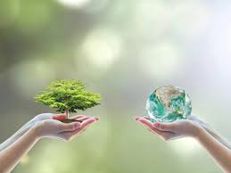

Visualization of Current Environmental Issues
Introduction of Data and Analysis

The environmental problems have received increasingly more attention in recent years. A lot of studies have been conducted to prove that the environment is changing and the effect of human is the main reason. Human activities affect the environment in several ways, such as burning fossil fuels, producing plastics, and draining rivers. These could lead to severe environmental issues like air pollution, global warming, and water pollution. At the same time, several organizations have been founded locally and regionally by governments to solve these issues. With the goal of maintaining a balance between quality of life and natural resources, these organizations play an important role in protecting natural environment.
This website concentrates on analyzing two major environmental issues, namely air pollution and water treatment and usage, in top ten OECD countries from 2006 to 2011. The raw data sets could be found in the OECD data website. The raw datasets from OECD data website include greenhouse gas (GHG) emissions, waste water treatment, water withdrawals, population, GDP, government spending on environmental protection. The objective is to visualize GHG emissions, water usage, and water treatment rate and compare them with economic indicators to identify the underlying relationship.
Image References